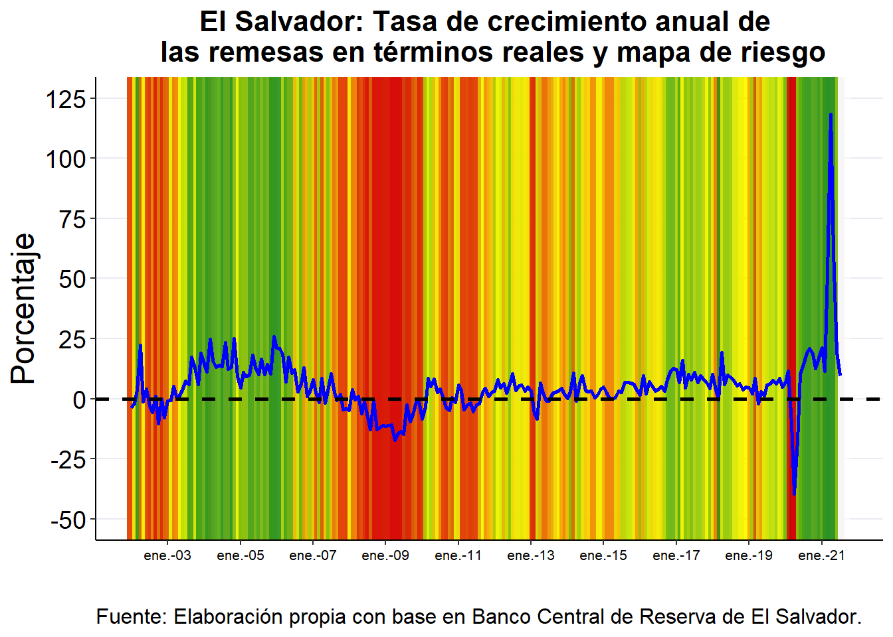

INTRODUCCIÓN A LA ESTABILIDAD FINANCIERA
2021-11-18
Capítulo 1 La importancia en la medición del riesgo sistémico
1.1 El mapa de riesgos
1.1.1 Aplicación para una serie
El caso de las remesas en El Salvador.
Para conocer mejor esta metodología por favor revisar Ortiz (2019)
library("zoo")
library("xts")
library("dplyr")
library("ggplot2")
library("ggrepel")
library("ggthemes")
REMESAS <- as.xts(read.zoo("REMESAS.csv", index.column = 1, sep = ";",
header = TRUE, format = "%d/%m/%Y"))
SV <- data.frame(date = index(REMESAS), coredata(REMESAS))
SV <- mutate(SV, SLV_R = SLV/(IPC_SV/100))
SV <- mutate(SV, DIFF = SLV_R - lag(SLV_R, n = 12))
SV <- mutate(SV, G1 = (DIFF/(lag(SLV_R, n = 12))) * 100)
BASE <- data.frame(date = SV$date, coredata(SV$G1))
colnames(BASE) <- c("date", "SV")
inicial <- "2002-01-01"
finalista <- "2021-09-01"
Data <- filter(BASE, date >= "2002-01-01" & date <= "2021-09-01")
dates <- Data[, "date"]
LARGO <- length(dates)
missing.color <- "white"
colours1T <- c("forestgreen", "yellow", "red3")
DIR <- -1
VARIABLES <- colnames(Data)
VAR <- Data[, VARIABLES[2]]
VAR.DIR <- VAR * DIR
EMP <- ecdf(VAR.DIR)
QUANT <- EMP(VAR.DIR)
z <- QUANT
zz <- z
assign(paste0(VARIABLES[2], ".s.lim"), max(VAR, na.rm = T) +
sd(VAR.DIR, na.rm = T)/2)
assign(paste0(VARIABLES[2], ".i.lim"), min(VAR, na.rm = T) -
sd(VAR.DIR, na.rm = T)/2)
dates.s <- Data$date[1]
dates <- Data$date
for (t in seq_along(dates)[-1]) {
mean.day <- dates[t - 1] + ((dates[t] - dates[t - 1])/2)
dates.s <- c(dates.s, mean.day, dates[t])
}
dates.s <- c(dates.s[1] - 45, dates.s, dates.s[length(dates.s)] +
45)
assign(paste0(VARIABLES[2]), VAR.DIR)
for (t in seq_along(dates)[-length(dates)]) {
pos <- which(dates[t] == dates.s)
assign(paste0(VARIABLES[2], ".t.", t), dates.s[pos + c(-1,
0, 1)])
if (is.na(zz[t])) {
assign(paste0(VARIABLES[2], ".c.", t), rgb(matrix(col2rgb(missing.color),
1, 3)/255))
} else {
assign(paste0(VARIABLES[2], ".c.", t), rgb(colorRamp(colours1T)(z[t])/255))
}
}
DATOS <- select(Data, date, SV)
DATOS$date <- as.Date(DATOS$date)
DATOS$MAX <- zz
DATOS$INICIO <- as.Date(DATOS$date) - 46
DATOS$FINAL <- as.Date(DATOS$date) + 46
for (t in seq_along(dates)[c(-LARGO)]) {
DATOS$COLOR[t] <- get(paste0(VARIABLES[2], ".c.", t))
}
DATOS$COLOR[LARGO] <- get(paste0(VARIABLES[2], ".c.", LARGO -
1))
P_2 <- paste0("+geom_rect(data = DATOS,aes(xmin =as.Date('",
DATOS$INICIO[1], "'), xmax =as.Date('", DATOS$FINAL[1], "'),ymin = -Inf, ymax = Inf),fill ='",
DATOS$COLOR[1], "',alpha = 0.05, color='transparent')")
for (j in 2:LARGO) {
P_2 <- paste0(P_2, "+geom_rect(data = DATOS,aes(xmin =as.Date('",
DATOS$INICIO[j], "'), xmax =as.Date('", DATOS$FINAL[j],
"'),ymin = -Inf, ymax = Inf),fill ='", DATOS$COLOR[j],
"',alpha = 0.05, color='transparent')")
}
P_1 <- "ggplot(data = DATOS, aes(x = date, y=SV))+labs(y='', x='')"
P <- paste0(P_1, P_2)
PS <- eval(parse(text = P))
PS <- PS + geom_line(size = 1, color = "blue") + labs(y = "Porcentaje",
x = "", title = "El Salvador: Tasa de crecimiento anual de \n las remesas en términos reales y mapa de riesgo",
caption = "Fuente: Elaboración propia con base en Banco Central de Reserva de El Salvador.") +
geom_hline(aes(yintercept = 0), color = "black", size = 1,
linetype = "dashed")
PS <- PS + theme_classic() + theme(axis.line.x = element_line(colour = "black",
size = 0.5), axis.line.y.left = element_line(colour = "black",
size = 0.5), axis.line.y.right = element_blank(), axis.text.x = element_text(color = "black",
size = 14), axis.text.y = element_text(color = "black", size = 14),
axis.title.x = element_text(color = "black", size = 18),
axis.title.y = element_text(color = "black", size = 18),
plot.title = element_text(size = 20, hjust = 0.5, face = "bold"),
plot.caption = element_text(size = 12, hjust = 0), panel.grid.major = element_line(size = 0.5,
linetype = "solid", colour = "#EAEAF2"))
PS <- PS + scale_x_date(date_breaks = "24 month", date_labels = "%b-%Y") +
scale_y_continuous(breaks = seq(-50, 125, by = 25), limits = c(-50,
125)) + coord_cartesian(xlim = as.Date(c("2002-01-01",
"2021-09-15")))ggsave(filename="SIVAR.jpg",
plot = PS,
#device = cairo_pdf,
width = 297,
height = 210,
units = "mm")
PS